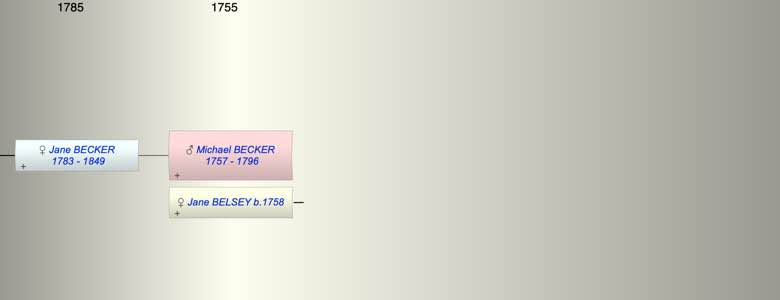

| [Index] |
| Michael BECKER (1757 - 1796) |
|  |
| b. 1757 |
| +. Jane BELSEY (1758 - ) |
| d. 1796 aged 39 |
| Children (1): |
| Jane BECKER (1783 - 1849) |
| Events in Michael BECKER (1757 - 1796)'s life | |||||
| Date | Age | Event | Place | Notes | Src |
| 1757 | Michael BECKER was born | ||||
| 1783 | 26 | Birth of daughter Jane BECKER | |||
| 1796 | 39 | Michael BECKER died | |||
| Created on a Mac™ using iFamily for Mac™ on 8 Oct 2023 |